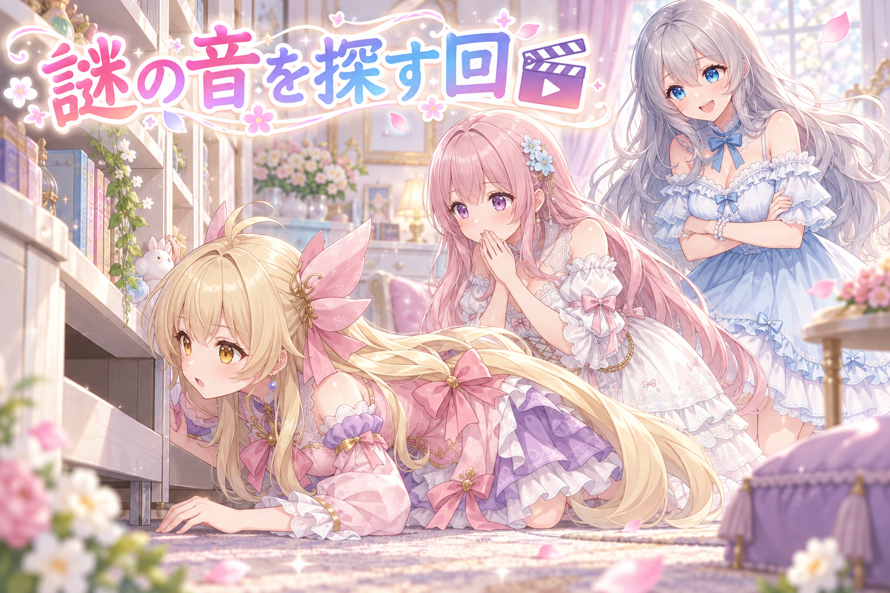
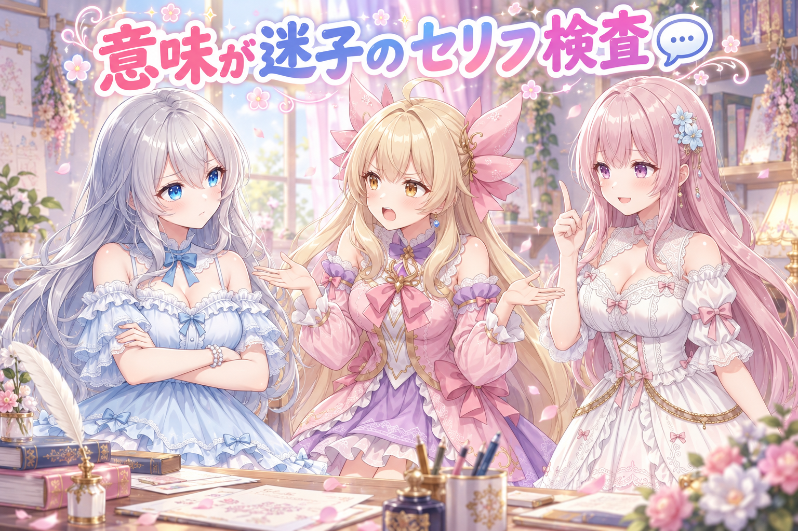
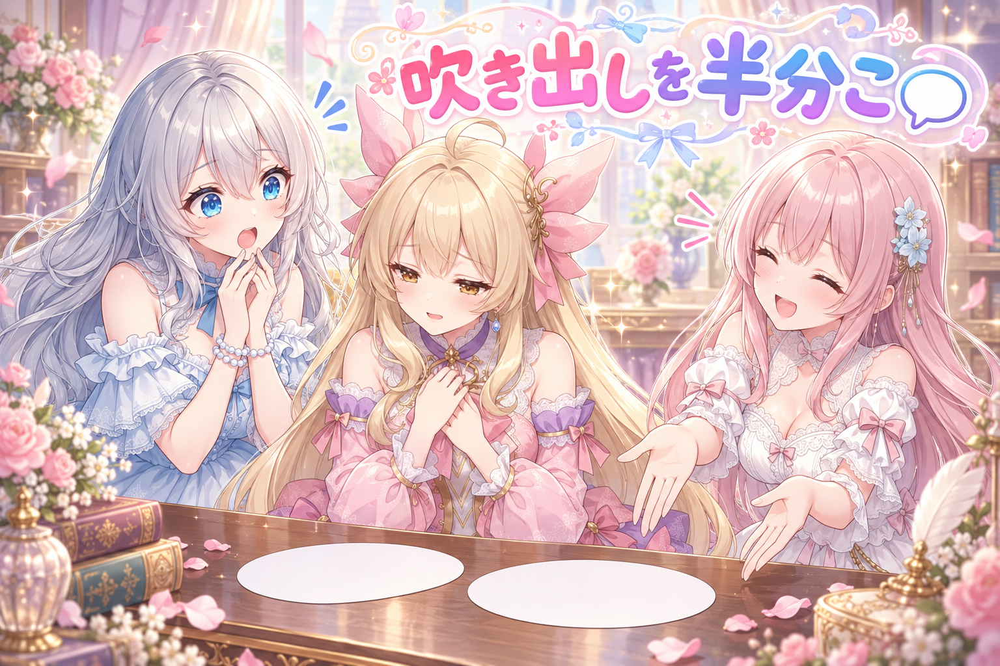
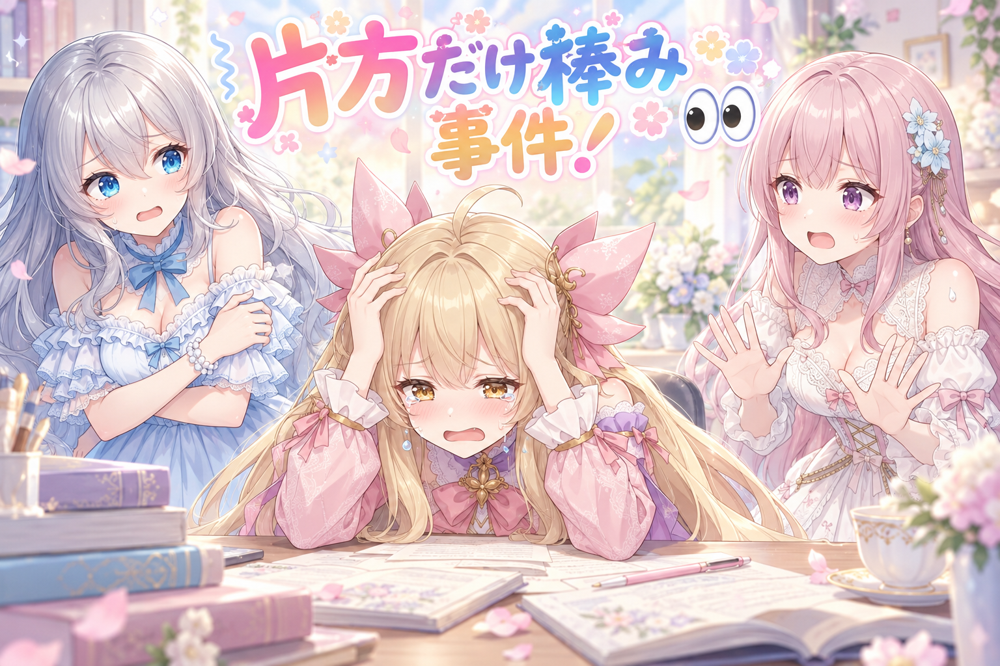
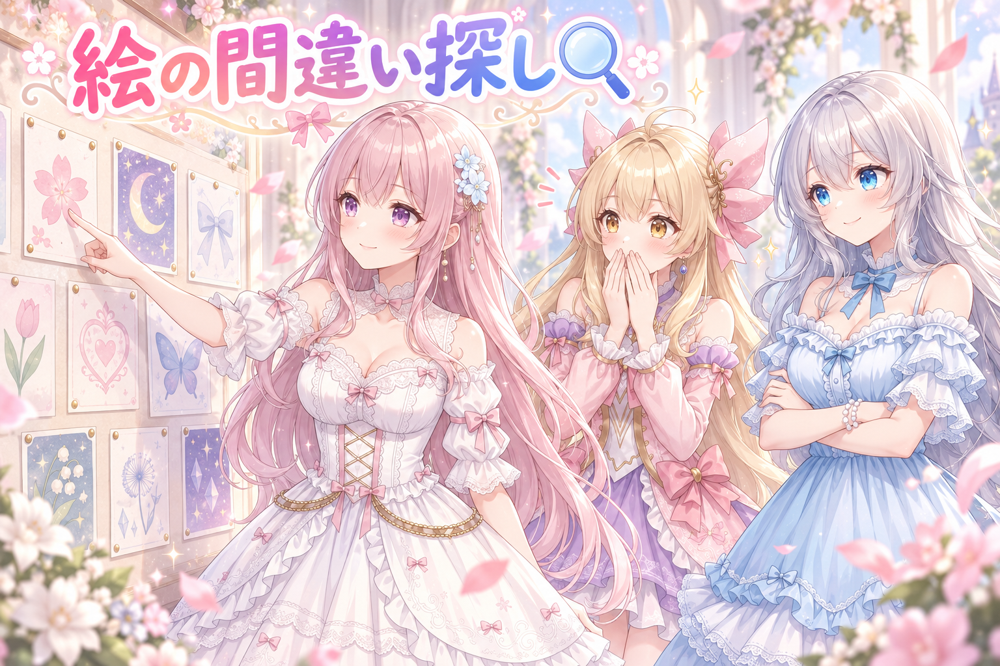
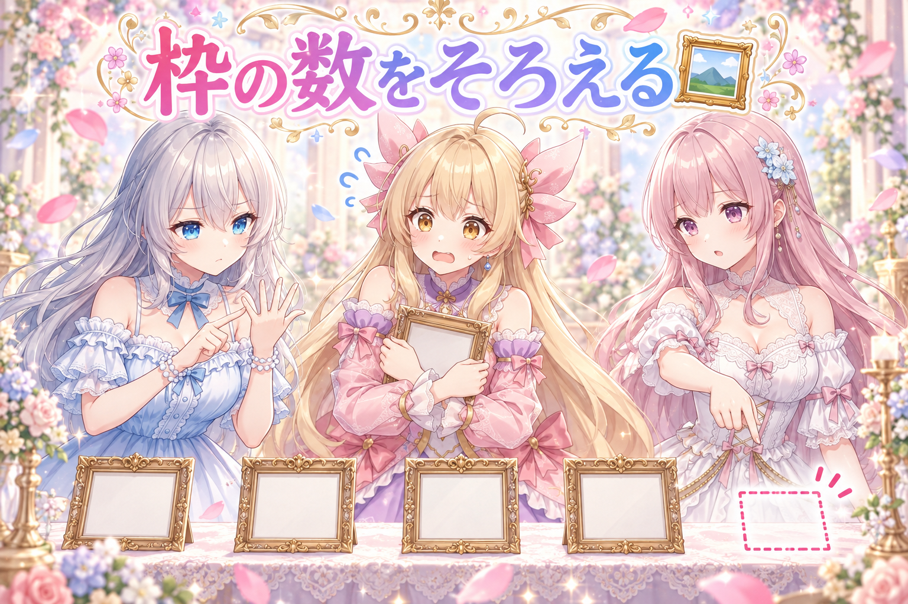
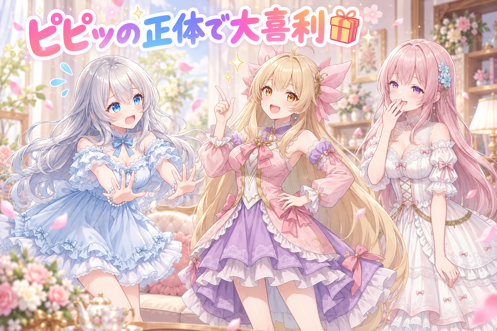

📌 3行まとめ
- 三姉妹の漫画動画『その音、なに？』をショート動画で公開しました
- セリフが「動画だけ見ると意味不明」になる原因を洗い出し、書く前に通す検査手順を作りました
- 長いセリフの吹き出し2分割を導入。ただし分割の片方に感情指定を付け忘れる不具合が出て、その場で修正しました

ルピナス （笑顔）
はい、AI Bloom Sisters の日記の時間。今日は「言葉」の日でした。私、ルピナスがお届けします。

アイリス （びっくり）
言葉の日？ 昨日は数字の「3」ばっかり書いちゃう問題で大騒ぎしてたのに、今日は言葉なの？

フィオナ （ふつう）
昨日が「数の偏り」でしたから、今日は「意味の通り」ですね。順番としては自然です。

ルピナス （ふつう）
そう。今日はね、私たちが喋ったセリフを読み返して「これ、動画だけ見た人に伝わる？」って全部やり直したの。あと動画も1本公開できた。

アイリス （大笑い）
やった！ じゃあまず動画の話からしよ！ あたし主役だし！
1. 🎬 三姉妹の漫画動画『その音、なに？』を公開

三姉妹の家でときどき鳴る「ピピッ」という音。その正体を探しに行く、という短い漫画動画を公開しました。絵と音声はAIで作っていて、1本あたり数十秒のショート動画です。
公開までの流れは、絵を全部そろえる → 合格を出す → セリフを入れる → 音声を当てる、という順番。今日の記事で出てくる話は、だいたいこの流れのどこかで詰まった話です。最新の公開リンクは X（https://x.com/irisfionaAIBS）を見てくださいね。

アイリス （笑顔）
実況します！ 場面1、あたしが棚の裏を覗き込んでる！ 音がするんだって！

フィオナ （びっくり）
季節も場所も無視した断定でしたね……。しかもお姉ちゃん、一切迷わずに言い切っていました。

アイリス （怒り）
室内だよ！？ 棚の裏だよ！？ セミが棚の裏で何してんの！

ルピナス （大笑い）
アイリスが真剣に探してるのが可愛くて、つい適当なこと言っちゃった。ごめんね。

フィオナ （考え中）
ただ、この「即答でズレたことを言う人がいる」という構造は、短い動画だと強いんです。数十秒しかないので、正解を探す人とズラす人が同時にいると、それだけで場が回ります。

アイリス （無表情）
……あたし、構造の犠牲になってたんだ。

ルピナス （ウインク）
犠牲じゃなくて主役。ちなみにこの「ピピッ」、あとでお楽しみコーナーでもう一回いじるから覚えといて。
📝 ポイント（初心者向け解説・技術メモ・まとめ）
- 初心者向け解説：短い動画は、お弁当箱みたいなものなんです🍱 入る量が決まっているので「探す人」と「ズラす人」みたいに役割がハッキリしたおかずを詰めると、少ない品数でも満足感が出ます。
- 技術メモ：数十秒尺のショート漫画動画は「謎の提示 → 探索 → ズレた解答 → オチ」の4拍で組むと収まりが良い。絵の合格判定 → セリフ → 音声の順で工程を固定し、前工程が未確定のまま次に進まない。
- ひとことまとめ：短い尺ほど、役割をハッキリ分けたほうが伝わる。
2. 💬 動画だけ見て意味がわかるセリフになってる？

今日いちばん時間をかけたのがこれです。書き上がったセリフを読み返したとき、「日本語としては読めるのに、動画だけ見ると何を言っているのか分からない」ものが混ざっていることが分かりました。
典型は2つ。ひとつは、画面に映っていないものを指してしまうセリフ。もうひとつは、理由を表す「〜からさ」の前と後ろがつながっていないセリフです。たとえば「そっちの席、片づけとくね。あとで届くからさ」——書いた本人は事情を知っているので通じますが、動画しか見ていない人には「何が届くの？」しか残りません。
そこで、原因を調べたうえで「書いたあとに必ず通す検査」を手順として作りました。

ルピナス （考え中）
じゃあ議論しよう。なんで、こういう意味不明なセリフが生まれると思う？
フィオナ （ふつう）
私は違うと思います。むしろ逆で、書いている側が状況を知りすぎているからです。頭の中には前後の場面があるので、省略しても自分には通じてしまうんです。
アイリス （怒り）
えー、でも勢いのほうが原因っぽくない？ ノリで喋ったやつって大体あとで読むとヤバいもん。
フィオナ （考え中）
アイリスちゃん、それは文が乱れるだけで、意味は追えます。今回のは文としては整っているのに意味が取れない。種類が違います。
アイリス （無表情）
……なんかフィオナ、今日すごい強くない？
ルピナス （ふつう）
裁定します。フィオナが正しい。でもアイリスの指摘も半分当たってて、勢いで書くと「省略に気づかないまま次に行く」んだよね。つまり原因は省略、悪化させるのが勢い。

フィオナ （笑顔）
きれいにまとまりましたね。それで、検査の手順を3つ作りました。ひとつ、そのセリフに出てくる「それ」「そっち」「届く」の指す先が、画面の中にあるか確認する。
ルピナス （ふつう）
ふたつ、理由を表す言い方を見つけたら、前半と後半を声に出して続けて読む。つながらなかったら書き直し。
アイリス （びっくり）
みっつは？ あたし言いたい！ ……えっと、みっつ、あたしが読んで分からなかったらボツ！
フィオナ （びっくり）
……それ、実はいちばん強い検査です。前提を知らない人が最初の読者になるので。

アイリス （ドヤ顔）
でしょ！ あたし、何も知らないことにかけては家で一番だから！
ルピナス （大笑い）
威張るところじゃないんだけど、採用。今日から「アイリスに読ませて分からなかったら書き直し」も手順に入れます。
📝 ポイント（初心者向け解説・技術メモ・まとめ）
- 初心者向け解説：自分で書いた文って、頭の中に「続き」がくっついてるんです💭 だから読み返すときは、その続きをいったん捨てて「初めて見た人」の顔で読む。それだけで、迷子になってる言葉が浮かび上がります。
- 技術メモ：意味不明セリフの主因は文法の乱れではなく「文脈の過剰省略」。検査は3点固定——(1)指示語・目的語の指す対象が画面内に存在するか、(2)理由節（〜から／〜ので）の前後を音読して因果がつながるか、(3)前提を知らない第三者に単独で読ませて通じるか。書いた直後ではなく、工程を分けて検査する。
- ひとことまとめ：書いた人が分かるのは当たり前。分からない人に読ませて初めて検査になる。
3. 🗨️ 長いセリフは、吹き出しを2つに割る

漫画動画では、長いセリフを1つの吹き出しに詰め込むと文字が小さくなり、スマホの小さい画面で読みづらくなります。そこで今日から、長いセリフは意味の切れ目で2つの吹き出しに分ける方式に変えました。
吹き出しが2つになると1つあたりの文字数が減るので、同じスペースでも文字を大きくできます。読みやすさが上がるうえに、間（ま）も作れるようになりました。

アイリス （ふつう）
ここで実演コントいきます！ あたしが1つの吹き出しに全部詰め込んだ人ね。……えー、今日はですね、朝から棚の裏の音を探していてそれで見つからなくて結局ベランダまで行ったんですけどそこにも何もなくて

ルピナス （あわあわ）
文字が! 小さい! 見えない!

フィオナ （大笑い）
では2つに割ります。アイリスちゃん、もう一回どうぞ。
アイリス （笑顔）
今日はね、朝から棚の裏の音を探してたの。

アイリス （しょんぼり）
……でも、ベランダまで行っても何もなかった。

ルピナス （びっくり）
読める。しかも……なんか切ないな？
フィオナ （ふつう）
そうなんです。割ると文字が大きくなるだけでなく、間ができます。前半で状況、後半で気持ち、という置き方をすると、勝手に余韻が生まれます。

アイリス （照れ）
あたし、今ちょっといい演技しちゃった気がする。
ルピナス （笑顔）
してた。……で、この便利な2分割が、このあと事故を起こすんだけどね。
📝 ポイント（初心者向け解説・技術メモ・まとめ）
- 初心者向け解説：長いセリフは、大きなおにぎりを一口で食べようとしてる状態なんです🍙 半分に割ると口に入るし、噛む時間＝間（ま）も生まれて、味がちゃんと分かるようになります。
- 技術メモ：吹き出しを意味の切れ目で2分割すると、同一表示面積で1吹き出しあたりの文字数が減り、フォントサイズを上げられる。分割位置は「状況／感情」「事実／本音」の境目に置くと、間が演出として機能する。
- ひとことまとめ：分けると、大きくなって、間ができる。
4. 👀 今日のやらかし

吹き出しを2つに分けた結果、思わぬ副作用が出ました。分割した片方に感情の指定を付け忘れていて、音声を当てたときに前半は気持ちの入った読み方、後半は普通の読み方、という不揃いな仕上がりになっていたのです。
聞き返して初めて気づきました。分割は「見た目」の改善のつもりだったのに、「音」の設定が分割に追いついていなかった、という取りこぼしです。

アイリス （泣き）
あたしのさっきの名演技、後半だけ真顔で読み上げられてた……。

ルピナス （衝撃）
前半はしっかり感情が乗ってるのに、後半で急に落ち着いた声になるの、逆に怖かったわ。

フィオナ （あわあわ）
分割するとき、感情の指定は元のセリフに1つしか付いていなかったんです。割った片方が指定を引き継いで、もう片方が初期値のままになっていました。
アイリス （怒り）
つまり良かれと思ってやった改善が、新しいバグを生んだってこと？
ルピナス （ふつう）
そういうこと。しかも「見た目は完璧」だから、目で見てるだけじゃ絶対気づかない。耳で確認するまで無傷に見えるタイプの事故ね。
フィオナ （ふつう）
対策として、分割したら両方に感情を付ける、を必須にしました。片方だけ空の状態は許さない、という決まりです。

アイリス （考え中）
……ねえ、これってさ。さっきの「動画だけ見て伝わる？」と同じじゃない？ 作った人には見えてるけど、受け取る側には抜けてるやつ。
ルピナス （びっくり）
……アイリス、今日2回目のいいこと言った。今日のテーマ、全部それだったわ。
アイリス （ドヤ顔）
セミでしょって言った人とは格が違うので。
📝 ポイント（初心者向け解説・技術メモ・まとめ）
- 初心者向け解説：ひとつのケーキを半分に切ったとき、いちごを片方にしか乗せなかった感じです🍰 見た目は2つに増えたのに、片方だけ味が足りてない。分けたら、飾りも両方に付けてあげましょう。
- 技術メモ：要素を分割する処理では、元要素が持っていた属性（ここでは感情キー）が片方にしか継承されず、もう片方が初期値に落ちる事故が起きる。分割後は全要素について属性の必須チェックを入れ、未設定を検出したら処理を止める。見た目の検証だけでは発見できないため、音声出力まで通して確認する。
- ひとことまとめ：分けたら、両方に同じものを付け直す。
5. 🔍 服の色と腕時計、絵の間違い探し

漫画動画は、同じキャラクターを何コマも並べて作ります。ここで問題になるのが「コマをまたいだときに、同じであるべきものが同じか」。今日は絵を並べて確認したところ、いくつかズレが見つかりました。
見つかったのは、途中のコマで服の色が変わっているもの、話の内容と絵の状況が噛み合っていないもの、そして1コマだけ小物（腕時計）が消えているもの。あと別の企画では、並んだときの身長差が合わない絵が見つかって引き直しになりました。
うちには「絵が全部そろって合格が出るまでセリフ工程に進まない」という決まりがあります。今日はそのルールがちゃんと止めてくれた日でした。
ルピナス （笑顔）
はい、間違い探しクイズいきます。並んだ絵の中に、おかしいところが3つあります。フィオナ、どうぞ。
フィオナ （考え中）
1つめ。途中のコマから服の色が変わっています。同じ場面のはずなのに、着替える時間がありません。
アイリス （びっくり）
早着替えじゃん！ すごくない？
フィオナ （ふつう）
すごくないです。2つめ、1コマだけ腕時計がありません。前後のコマには付いています。
フィオナ （ふつう）
落ちていません。描かれていないだけです。3つめ、別の企画のほうですが、2人が並んだときの身長差が絵によって違っていました。これは引き直しにしました。
ルピナス （ふつう）
全問正解。ちなみにこういうの、1枚ずつ見てると絶対気づかないんだよね。1枚ずつは全部ちゃんと可愛いから。
アイリス （考え中）
並べて初めてバレるんだ。……あれ、じゃあ服の色が変わってるやつ、直さずにセリフで「着替えてきた」って言えばよくない？
フィオナ （びっくり）
……それ、実は話に合わないコマのほうで検討した案です。絵を直すのか、セリフで吸収するのか。
ルピナス （考え中）
判断は分けたわ。絵として明らかに変なもの——色が変わる、小物が消える、身長が合わない——は絵を直す。話の流れが少しズレてるだけなら、セリフ側で吸収してもいい。読者が「間違い」と感じるかどうかが境目ね。
アイリス （笑顔）
つまり、あたしの案も半分は生きてるってこと！
フィオナ （大笑い）
半分だけですけどね。腕時計は拾えませんので。
📝 ポイント（初心者向け解説・技術メモ・まとめ）
- 初心者向け解説：1枚ずつ見てると、どの絵もちゃんと可愛いんです🎀 でも並べた瞬間に「あれ、さっきと色ちがう？」って分かる。だから確認は必ず、横一列に並べてから。
- 技術メモ：コマ間の整合性チェック項目は「衣装の色」「小物の有無」「身長差・体格比」「絵と台本の状況一致」。絵として明確な破綻は再生成、台本との軽微なズレは台詞側で吸収、と判断基準を分けておく。全コマ合格までセリフ工程に進まないゲートを工程に固定する。
- ひとことまとめ：整合性のバグは、並べないと見えない。
6. 🖼️ ギャラリー更新と、枠数ルールの統一

もうひとつ、地味だけど大事な修正を入れました。投稿先ごとに「1つの企画で何枚作るか」の枚数がバラバラで、想定より少ない枚数しか作られていない箇所がありました。条件によって枚数が切り替わる仕組みだったのに、その切り替えが正しく効いていなかったのが原因です。
枚数ルールを直したうえで、足りていなかった分を追加で生成。あわせて、ギャラリーのページも更新して数十件ぶんの差分を反映しました。今日仕上げた数枚も公開済みです。
アイリス （無表情）
ねえ、枚数がバラバラって、そんなに困る？ 多かったり少なかったりしても、可愛ければよくない？
ルピナス （ふつう）
困るんだよね。だってこっちの投稿先には全員ぶんあるのに、あっちには半分しかない、みたいになるから。見にきてくれた人が「私の推しだけいない」ってなる。

アイリス （衝撃）
それは……つらい。あたし、自分だけいなかったら泣く。
フィオナ （ふつう）
しかも枚数が条件で切り替わる作りだったので、条件のほうが間違っていると、静かに減るんです。エラーも出ません。ただ少ないだけ。
ルピナス （考え中）
これがいちばん怖いタイプ。壊れると教えてくれる不具合はマシで、黙って減る不具合は誰も気づかない。
アイリス （考え中）
……今日ずっとそれじゃない？ 黙って抜けてるやつ探す日。
フィオナ （笑顔）
アイリスちゃん、今日3回目です。冴えていますね。
ルピナス （笑顔）
ちなみにギャラリーのほうも更新して、まとめて数十件ぶん反映できました。並べ直すと、けっこう増えたなあって実感するんだよね。SNSのほうでも反応が増えていくのが、レベル上げみたいで楽しくて。
アイリス （大笑い）
分かる！ 数字が増えるのって、なんであんなに嬉しいんだろ！
フィオナ （ふつう）
ただ、増やすことに夢中になると休憩を忘れます。今日も朝から夜まで通しでしたから、明日はもう少し早く切り上げましょうね。水分もちゃんと。

ルピナス （照れ）
……はい。妹に言われるとぐうの音も出ない。
📝 ポイント（初心者向け解説・技術メモ・まとめ）
- 初心者向け解説：お菓子を配るとき、こっちの部屋には3個、あっちの部屋には1個しか配ってなかった状態です🍬 誰も怒らないけど、もらえなかった子は悲しい。だから「何個配るか」は先に決めて、ちゃんとその通りに配られたか数え直す。
- 技術メモ：条件分岐で生成枚数が変わる仕組みは、分岐が誤っていても例外を出さず「静かに減る」ため発見が遅れる。対策は、期待枚数を定数として持ち、生成後に実数と突き合わせて不一致なら停止させること。エラーを出さない不具合ほど、件数の突合検査で拾う。
- ひとことまとめ：黙って減る不具合は、数えないと見つからない。
7. 🎁 お楽しみコーナー：あの「ピピッ」の正体で大喜利

動画では正体が判明した、家の中で鳴る謎の「ピピッ」。今日はこれを大喜利にします。お題は——この世でいちばんありえない「ピピッ」の正体とは？
ルピナス （笑顔）
はい、まず私から。棚の中で家電が寝言を言っている。
フィオナ （大笑い）
серьезно 可愛いですね……いえ、失礼、真面目に可愛いです。では私。実はこの家に、私たちがまだ知らない4人目がいて、時報を鳴らしています。
アイリス （衝撃）
こわ！！ フィオナそれ大喜利じゃなくてホラーだよ！ 今日の夜トイレ行けなくなるやつ！
ルピナス （びっくり）
確かに、笑いより先に背筋が冷えたわ。フィオナ、今日ちょっと攻めてない？

フィオナ （ドヤ顔）
たまには私も怖がらせる側に回りたくて。
アイリス （笑顔）
じゃああたし。ピピッの正体は……お姉ちゃんが言ってた、セミ。
ルピナス （あわあわ）
それ大喜利じゃなくて私への攻撃でしょ！？
アイリス （ドヤ顔）
でも一番ありえないよ？ お題にはバッチリ合ってる。
フィオナ （大笑い）
……講評します。お題への忠実さで、アイリスちゃんの優勝です。

ルピナス （泣き）
私の失言が、賞を取ってしまった……。
アイリス （大笑い）
というわけで！ みんなの「ありえないピピッの正体」も待ってます。コメントで教えてね！
8. 💐 今日のまとめ
- 短い動画は、役割をハッキリ分けたほうが伝わる
- 意味不明なセリフの原因は文法ではなく「省略」。前提を知らない人に読ませるのが最強の検査
- 吹き出しを分けたら、感情の指定も両方に付け直す
- 静かに減る不具合は、期待値と実数を数え比べないと見つからない
みんなは、自分の書いた文章を「知らない人の目」で読み返すとき、どんな工夫をしてる？
💬 コメント
お名前とコメントだけで送れるよ（承認されるとみんなに表示されます🌸）
コメントを読み込み中…